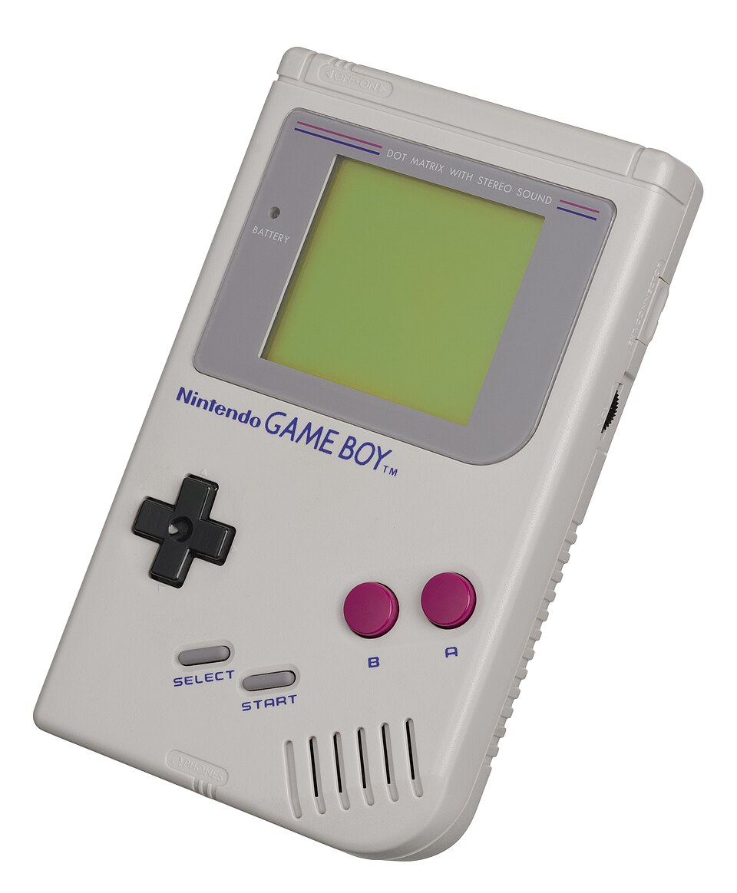

Game Boy
Spēlēšanai vairs nav vajadzīgs televizors.
Game Boy ļāva spēlēt bez televizora. Mazs ekrāns, pogas un maināmas spēļu kasetnes bija apvienotas vienā pārnēsājamā ierīcē.

Spēlēšanai vairs nav vajadzīgs televizors.
Game Boy ļāva spēlēt bez televizora. Mazs ekrāns, pogas un maināmas spēļu kasetnes bija apvienotas vienā pārnēsājamā ierīcē.